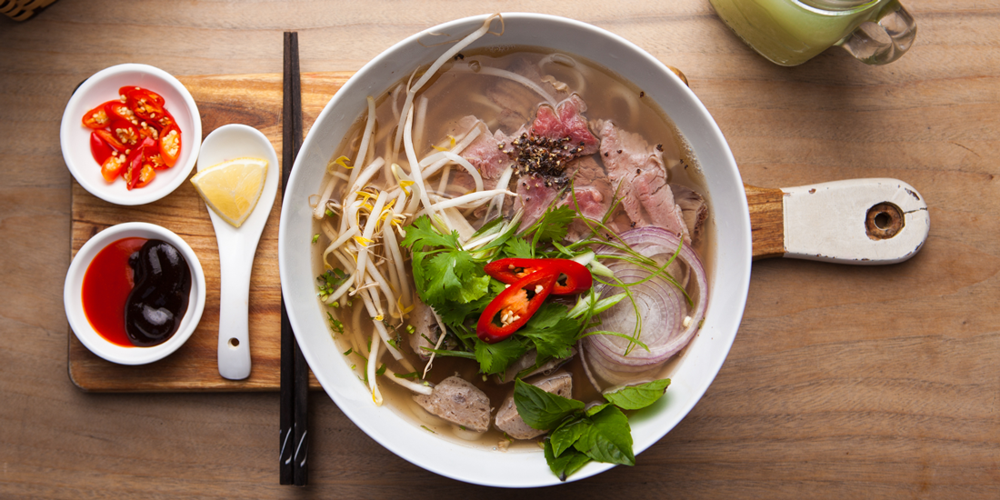

ベトナム・ハノイで絶大な人気を誇るフォーの名店が このたび日本に初上陸。現地の人も行列をつくる人 気ぶり、メニューは1種類だけという職人魂。 牛や豚骨をじっくり煮込んだ自慢の極上スープ。 ヘルシーな米麺とほやほやの牛肉、 味の決め手はシャキシャキのネギ、 もうお箸を持つ手が止まりません。 途中から秘伝のチリソースやライムを入れて 味の変化を楽しむのも本場ならでは。 最後の一滴まで飲み干せるやさしい旨味で お腹もココロも満たされていくことでしょう。 あなたのフォーの常識が、きっとくつがえされるはず
